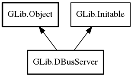

DBusServer
Object Hierarchy:
Description:
DBusServer is a helper for listening to and accepting D-Bus connections.
This can be used to create a new D-Bus server, allowing two peers to use the D-Bus protocol for their own specialized communication. A server instance provided in this way will not perform message routing or implement the org.freedesktop.DBus interface.
To just export an object on a well-known name on a message bus, such as the session or system bus, you should instead use
g_bus_own_name.
An example of peer-to-peer communication with G-DBus can be found in gdbus-example-peer.c.
Namespace: GLib
Package: gio-2.0
Content:
Properties:
Creation methods:
Methods:
Signals:
Inherited Members:
All known members inherited from class GLib.Object

All known members inherited from interface GLib.Initable